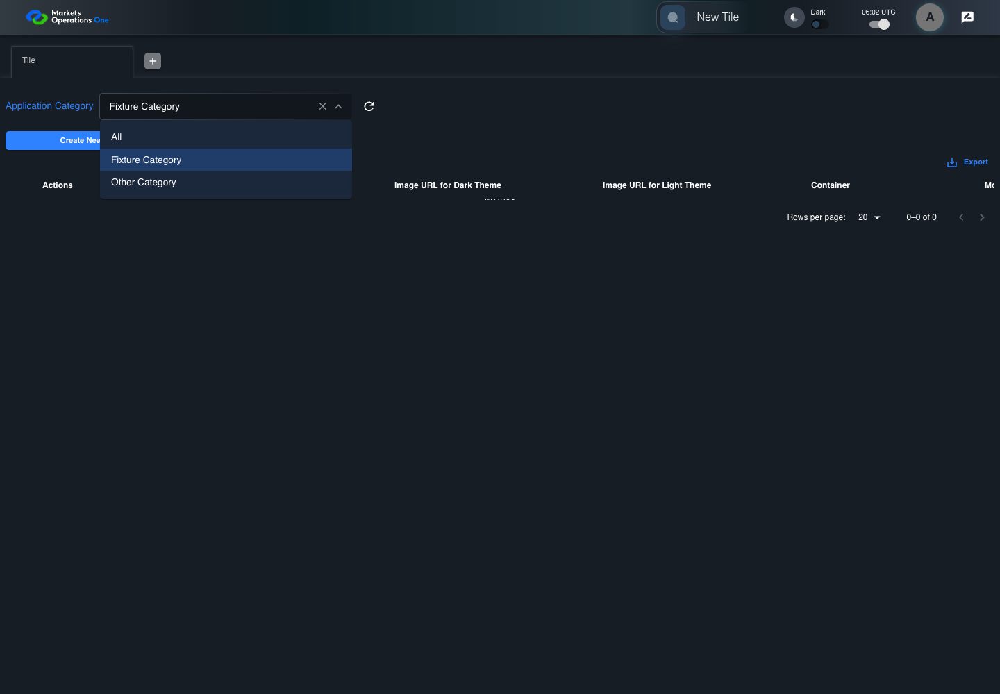

UI-RISK-005 administration source risk with live evidence
PASS · application/run-050/ui-risk-005-administration-source-risk-with-live-evidence-747254ba8a22-attempt-1 · ACTUAL_APPLICATION_LOCAL_SERVICES
Actual React administration screens. Controlled browser credentials, role, records, and BFF responses. Save probes persist the received UI payload without replacing it with expected values. Declared clock emulation controls field timers. Proposed accessibility and source-risk expectations remain separate from business approval.
2026-10-22T06:02:54.757Z to 2026-10-22T06:02:59.740Z
Assertions and result · Artifact manifest · Exact run inputs and source hashes
Result SHA-256:b292568d35e821795012fd445bce9cc6681f6d97fbe923bcdc4525f2744900e0Machine observations
- controlled-response-81.json
7dd8b734357aedaf55ac4ce7daea3a9e0e16f9aec7365bf85bb32eb6047fde14 - controlled-response-82.json
828dd1fc229ccf63fc95d08a2a9e98446bbd5154d70c9cdc45a929f85cda3d0c
Screenshot capture: CAPTURED. Named frames: 11.
Step screenshot evidence: COMPLETE. 10/10 canonical steps have execution screenshots.
Canonical step timeline
Given Admin A is authenticated as fixture UI-ADMIN-01 with the case-specific permissions
Execution: PASSED.1. step-01 Visible state after step 1: Given Admin A is authenticated as fixture UI-ADMIN-01 with the case-specific permissions
2026-10-22T06:02:56.794Z · 1440×1000
Step: /Users/lushevol/code/github/ratan-release-impact/workbench/tasks/ui-test-coverage-20261022/test-cases.md:10265
SHA-256:5fd3c83eb91a6bd3dbf23c6b7a787d629a6ed729d90f87901a9e68d2b0049053And Fixture Category and Other Category requests can be controlled independently
Execution: PASSED.2. step-02 Visible state after step 2: And Fixture Category and Other Category requests can be controlled independently
2026-10-22T06:02:57.681Z · 1440×1000
Step: /Users/lushevol/code/github/ratan-release-impact/workbench/tasks/ui-test-coverage-20261022/test-cases.md:10266
SHA-256:8d51e3158d56343f0158cc5cca5ecff337273cc10d01c23aa07c78252a803433When Admin A opens combobox named "Application Category" inside the "Tile" administration tabpanel
Execution: PASSED.3. step-03 Visible state after step 3: When Admin A opens combobox named "Application Category" inside the "Tile" administration tabpanel
2026-10-22T06:02:57.795Z · 1440×1000
Step: /Users/lushevol/code/github/ratan-release-impact/workbench/tasks/ui-test-coverage-20261022/test-cases.md:10267
SHA-256:d16934b57ed38bf1654faf1f7bb94e210076156714446018dcc17033497bc1e7And Admin A clicks option named "Fixture Category" inside the popup for the "Application Category" combobox inside the Tile administration tabpanel
Execution: PASSED.4. step-04 Visible state after step 4: And Admin A clicks option named "Fixture Category" inside the popup for the "Application Category" combobox inside the Tile administration tabpanel
2026-10-22T06:02:58.029Z · 1440×1000
Step: /Users/lushevol/code/github/ratan-release-impact/workbench/tasks/ui-test-coverage-20261022/test-cases.md:10268
SHA-256:a5c3a82fb02d35efe9f0f4c40bb0498fbef14cd17a12dae8af39d556182de776And Admin A opens combobox named "Application Category" inside the "Tile" administration tabpanel
Execution: PASSED.
5. step-05 Visible state after step 5: And Admin A opens combobox named "Application Category" inside the "Tile" administration tabpanel
2026-10-22T06:02:58.131Z · 1440×1000
Step: /Users/lushevol/code/github/ratan-release-impact/workbench/tasks/ui-test-coverage-20261022/test-cases.md:10269
SHA-256:8fe15cfea76a129dacdb9a902db898953a8ce778d243df76ecc6eb7307a2a52dAnd Admin A clicks option named "Other Category" inside the popup for the "Application Category" combobox inside the Tile administration tabpanel
Execution: PASSED.6. step-06 Visible state after step 6: And Admin A clicks option named "Other Category" inside the popup for the "Application Category" combobox inside the Tile administration tabpanel
2026-10-22T06:02:58.330Z · 1440×1000
Step: /Users/lushevol/code/github/ratan-release-impact/workbench/tasks/ui-test-coverage-20261022/test-cases.md:10270
SHA-256:13030c63ed2d4335facc830960c05ebebde2af39023a87df72e404e2265f6a99And the controlled BFF fixture resolves the Other Category tile response
Execution: PASSED.7. step-07 Visible state after step 7: And the controlled BFF fixture resolves the Other Category tile response
2026-10-22T06:02:58.453Z · 1440×1000
Step: /Users/lushevol/code/github/ratan-release-impact/workbench/tasks/ui-test-coverage-20261022/test-cases.md:10271
SHA-256:66fe0528f0c54a026af0c63627d36baf2b584893e12d3d0b6426843a87c1b229And the controlled BFF fixture resolves the earlier Fixture Category tile response
Execution: PASSED.8. step-08 Visible state after step 8: And the controlled BFF fixture resolves the earlier Fixture Category tile response
2026-10-22T06:02:58.531Z · 1440×1000
Step: /Users/lushevol/code/github/ratan-release-impact/workbench/tasks/ui-test-coverage-20261022/test-cases.md:10272
SHA-256:0a5bfa143c75b368f9d0d5dff050dc5a18742138ec9049a3fe2125101eaeae38Then combobox named "Application Category" inside the "Tile" administration tabpanel has value "Other Category"
Execution: PASSED.9. step-09 Visible state after step 9: Then combobox named "Application Category" inside the "Tile" administration tabpanel has value "Other Category"
2026-10-22T06:02:58.608Z · 1440×1000
Step: /Users/lushevol/code/github/ratan-release-impact/workbench/tasks/ui-test-coverage-20261022/test-cases.md:10273
SHA-256:9d1270fd071893a66a02d32a876c6bc4daad2a3b7ba8645fe528e760789da684And every displayed tile row in data grid with source identity "administration records" inside the "Tile" administration tabpanel belongs to Other Category
Execution: PASSED.10. step-10 Visible state after step 10: And every displayed tile row in data grid with source identity "administration records" inside the "Tile" administration tabpanel belongs to Other Category
2026-10-22T06:02:58.740Z · 1440×1000
Step: /Users/lushevol/code/github/ratan-release-impact/workbench/tasks/ui-test-coverage-20261022/test-cases.md:10274
SHA-256:e9ce3fef5fdd41b39f0284a2c10e4bad1628bcf54b05610f1df5b0e6a3e51b4b


Additional named frames

Screenshots establish visible state only. Assertions and traces support functional claims.